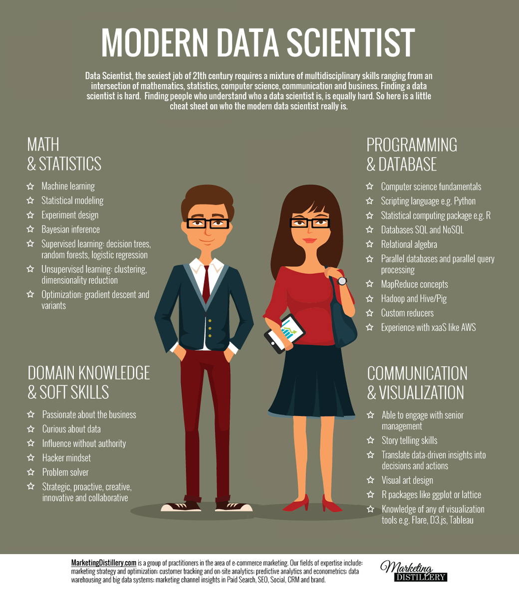

"저는 연봉 12만5천불의 Data Scientist입니다만..."
게시: 2019-05-02T06:30:58+09:00
최근 야후 파이낸스에 '저는 연봉 12만5천불의 Data Scientist입니다만, 평생 이 일을 하고 싶진 않아요' 라는 제목의 기사가 실렸습니다. I'm A Data Scientist Making $125K – & I Don't Want To Do This For The Rest Of My Career https://finance.yahoo.com/amphtml/news/im-data-scientist-making-125k-203431776.html 돈 이야기 좋아하는 속물인 제가 이런 제목을 보고 그냥 지나칠 수는 없었습니다. 읽어보고 한줄 요약하니 이렇습니다. "직업 이야기는 세계 어디나 다 똑같구나..." 이 기사는 연봉 10만불 이상인 여성들의 이야기를 시리즈물로 연재하고 있는 기사들 중 일부입니다. 참고로 미국에서 이 정도의 수입이 있는 여성은 전체 여성의 5% 정도라고 하네요. 참고로 이 기사에는 200여개의 댓글이 달렸는데, 일부는 이 여성을 칭찬하는 내용이고 상당수는 질투하는 내용입니다. 뉴욕에서 12.5만불이면 거지처럼 살아야 한다는 등의 댓글 달리는 것은 한국이나 미국이나 똑같더군요. 눈에 띄는 댓글은 아래와 같은 것이었습니다. “In poverty she is envious. In riches she may be a snob. Money does not change the sickness, only the symptoms”
- John Steinbeck, The Winter of Our Discontent "빈곤할 때 그녀는 질투한다. 부유할 때 그녀는 속물이다. 돈이 있다고 병 자체가 변하는 것이 아니다. 변하는 것은 증상 뿐이다."
- 존 스타인벡, 불만의 겨울

직업: 중견 데이터 분석사 나이: 28 장소: 뉴욕 학위: 수학 학사 초봉: $65,000 현재 연봉: $125,000 Q : 어릴 때의 꿈은 뭐였나요 ? A : 어릴 때야 뭔들 하고 싶지 않았겠어요 ? 처음에는 피아니스트, 다음에는 우주비행사가 되고 싶었어요. 나중에는 변호사가 되고 싶었다가 13살 일때는 심리상담사가 되고 싶었지요. 솔직히, 그건 성인이 되고나서도 계속 나 자신에게 묻고 있는 질문이에요. Q : 대학에서는 뭘 공부하셨나요 ? A : 수학 전공했어요. 18살이라는 나이는 다음 4년간 뭘 공부할지 정하기에는 너무 이른 나이에요. 저는 자랄 때 수학을 잘하기는 했는데, 그렇다고 거기에 대해 열정이 있거나 한 것은 아니었어요. Q : 학자금 융자를 써야 했나요 ? A : 예, 1만8천불을 융자 받았어요. 저는 반 정도는 장학금과 금전적 지원을 받아서 해결했어요. 제 부모님이 그 대부분을 주신 거지요. 제가 1만8천불만 융자 받은 것은 사실 운이 좋은 편이었어요. 3년 안에 다 갚았지요. Q : 대학 졸업 이후 계속 이 회사에서 일하셨나요 ? A : 아니요. 여기저기 많이 옮겨다녔어요. 항상 기술직이기는 했지만 산업 계통은 많이 바꿨어요. 처음에는 소프트웨어 회사를 다니다가 컨설팅 일도 조금 했고요, 이젠 기술 스타트업 회사에서 일하고 있습니다. Q : 직장에서 매일 무슨 일을 하는지 설명해주실 수 있으세요 ? A : 매일 data를 분석해요. 그러니까 쉽게 데이터를 볼 수 있는 계기판을 만들거나 여러가지 데이터를 요약하는 코드를 짜는 거지요. 여러가지 다양한 문제를 해결하기 위해 회사 내의 여러 사람들과 협업을 해요. 뜻하는 바는 측정 단위를 정의하기도 하고, 시간에 따라 어떤 변화가 일어나는지 보기 위해 시각화를 만들기도 하고 빅데이터에서 뭔가 의미를 뽑아내기도 한다는 이야기지요. Q : 연봉 협상을 하세요 ? A : 그럼요 ! 항상 협상을 하지요. 현재 하고 있는 일과 하고 싶은 일에 대해 항상 부지런히 시장 조사를 해요. 예전 직장에서는 연봉 협상을 안 했는데, 거기에 대해서는 지금도 후회를 하고 있어요. 최근 일자리 검색을 하면서 몇가지 제의를 받기도 했는데, 현재 직장에서 협상할 때 그런 일자리 제의가 도움이 되었어요. 협상할 때는 단호하면서도 이해심을 가져야 해요. 더 많은 보상을 받으려면 확고한 물증, 가령 자격증이나 자기만 할 수 있는 기술 등이 있어야 해요. 하지만 다른 형태의 보상에 대해서도 오픈 마인드여야 하고요. 제 현직장에서는 취업 보너스를 더 많이 줄 수는 없었지만 우리사주를 좀더 주었지요. Q : 현재 직업에 대해 열정이 있으신가요 ? 아니라면 왜 그렇지요 ? A : 그 점에 대해서는 지금도 고민 중이에요. 저는 지금 하는 일 잘 하고 있어요. 하지만 그렇다고 흥분될 정도는 아니에요. 제게는 까다로운 문제 해결에 도움이 되는 창의적 측면도 있지만, 그런 창의성은 딱 데이터 분석에 사용될 정도에 불과한 정도에요. 저는 직업에서 열정을 찾아야 한다는 개념은 포기했어요. 많은 밀레니얼 세대가 직장에서 가지는 불만이 그런 부분이라고 생각해요. 제가 속한 세대의 많은 사람들은 너는 무엇이든 니가 원하는 것이 될 수 있다는 말을 들으며 자랐어요. 대학에 갈 때는 나중에 세계 기아 문제를 해결할 수도 있을 거라고 생각하지요. 하지만 현실은 대부분의 직업이 그냥 생활비 내고 전기세 내는 것이라는 거에요. 저는 그 점에 대해서는 현실과 타협했어요. 저는 디자인하고 미술 공예 하는 것을 좋아하지만, 그걸로 직업이 될지는 모르겠어요. 그건 그냥 취미에 대한 열정 정도지요. Q : 할 수만 있다면, 커리어 방향에서 무엇이든 바꿔보시겠습니까 ? A : 좀 위선적이긴 하지만, 모든 일에는 이유가 있는 거라고 생각해요. 저는 지금 상태에 만족하는 편이에요. 동시에, 지금 하는 일을 평생 하고 싶지는 않아요. 앞으로 무슨 일을 하게 될지는 잘 모르겠지만, 당장은 모르는 상태로 두는 것이 불편하진 않아요.